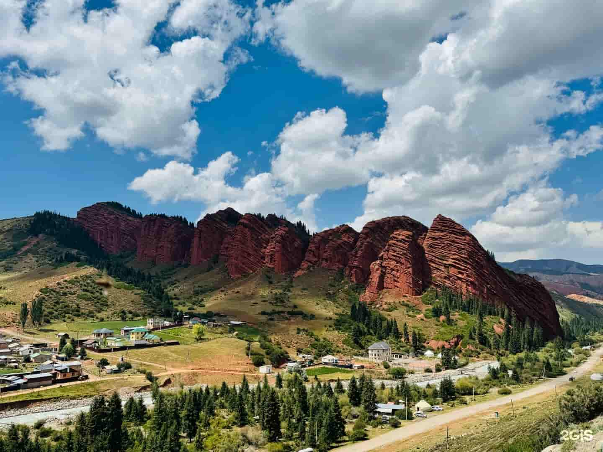
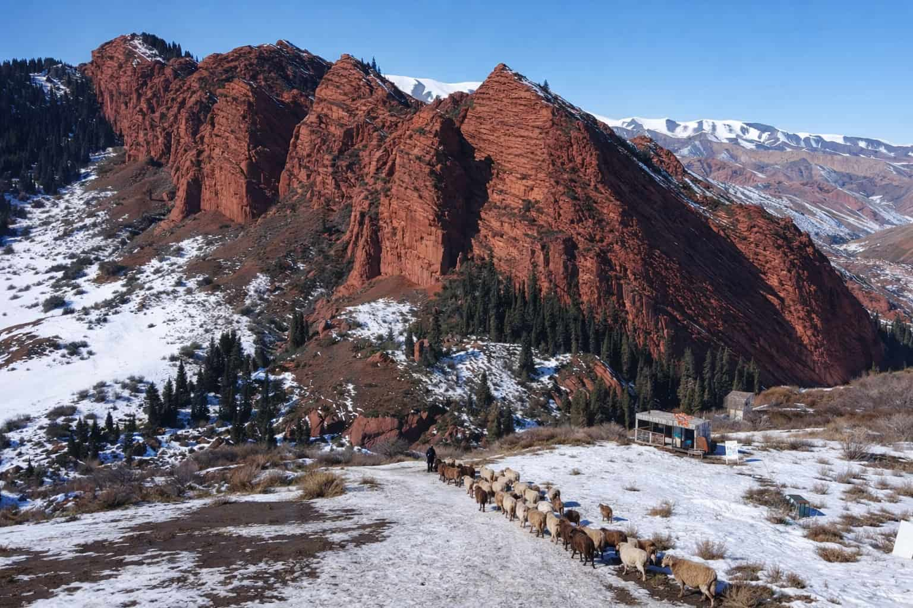
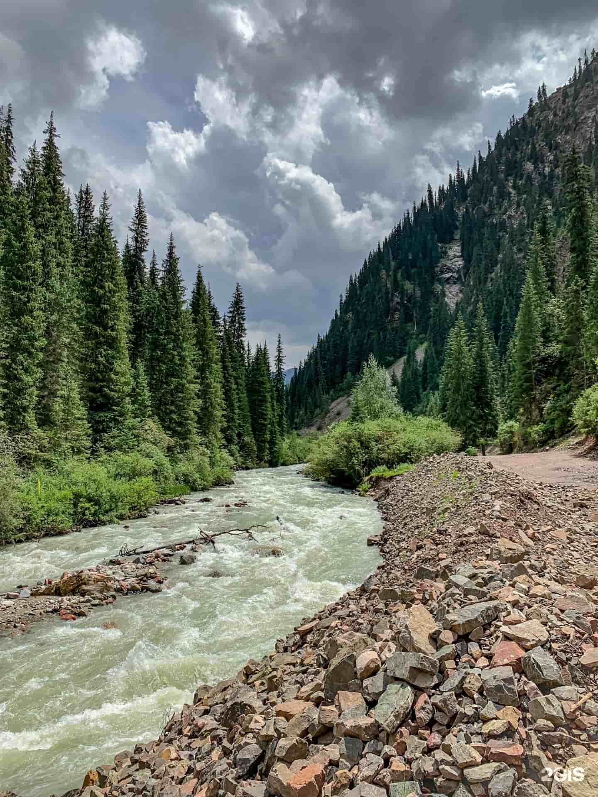
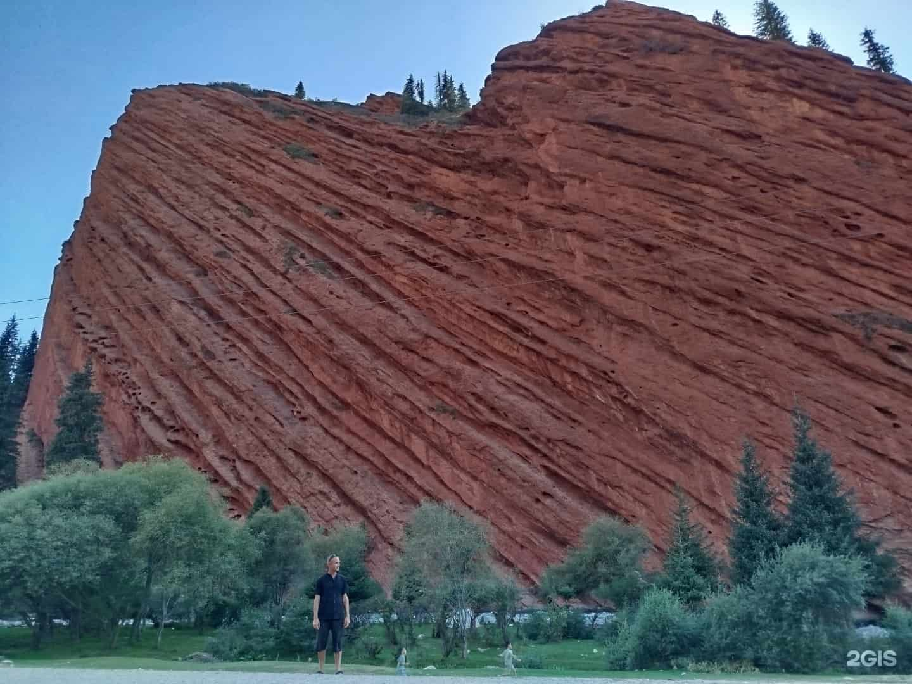

Jeti-Oguz is one of the most iconic landscapes in Kyrgyzstan — a wall of red sandstone cliffs rising above a green valley near Karakol. The name means “Seven Bulls”, and once you see the ridge, you’ll understand immediately. Right nearby is the famous Broken Heart rock — the classic first photo stop.

What is Jeti-Oguz?
Jeti-Oguz is a protected natural monument in the Issyk-Kul region, located close to Karakol. The main attraction is the Seven Bulls ridge — a long red cliff that looks like seven massive bulls lying side by side.
Just a short walk away is the Broken Heart rock formation. It’s smaller than the ridge, but it’s the most recognizable shape — and the best “quick win” photo.

Broken Heart Rock
Easy access, instantly recognizable shape, and perfect framing for travel photos and reels.

Seven Bulls Viewpoint
Walk up for the cleanest panorama — the ridge looks even more dramatic from above.

Valley Walks
Calm trails along the valley with river sounds, green meadows, and a peaceful alpine vibe.

Jeti Oguz's Rock view
Near look at the gigantic rock is making you feel small. Best time for photos and video.
Where to get the shot
Quick tips before you go
-
🌅
Go late afternoon Golden hour makes the red cliffs glow and looks best on camera.
-
🥾
Wear shoes with grip Loose dust and sandstone can be slippery on steeper parts.
-
💧
Bring water Even short climbs feel stronger in dry mountain air.
-
📸
Film details Textures, footsteps, wind, and wide shots make your edit feel premium.